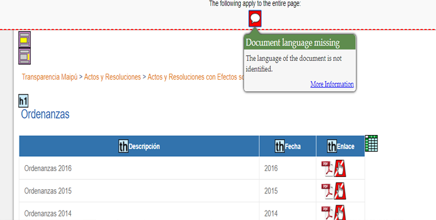
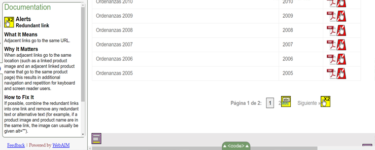

Municipalidad de Maipú
Evaluación de Sitio web
Análisis General
El sitio web posee buen contraste de colores, el tamaño tipográfico es fácil de leer y además es inclusiva, ya que contiene audios que leen en voz alta los textos más importantes. Abarca los justos servicios y problemáticas, pero con un gran problema de diagramación, ya que en general el sitio está muy saturado de información e imágenes, hay un problema de clasificación de elementos para hacer al sitio más amigable visualmente.
comentario imagen
lwdwqhdwqdjwqldwljd
Análisis de páginas
Página de Inicio
Errores de Código
En aspectos generales, el error que se repite en gran magnitúd en el index del sitio web, es la ausencia del atributo "alt" en las imagenes. Es decir, al faltarle este atributo, Google no podrá leer las imágenes y atribuirles un nombre determinado.

Otro error común en el sitio es la ausencia de texto en los links. Esto es un problema, ya que si el link no contiene texto, la funcion o propósito de este no será presentado al usuario. Esto puede crear confusión al "keyboard" y al lector de pantallas.

Falencias Visuales
En general, hay una saturación de información. Se le da importancia a publicidades propias del municipio antes que links relevantes como "Nuestra salud" etc. El principal problema es de distribución de la información y de clasificación de lo más importante a lo menos relevante. El footer además es innecesariamente muy extenso

Otro de los errores que aparecen en la página es la presencia de otra plataforma linkeada, la cual no cumple con una ley similar en cuanto a estructura y lenguaje gráfico,esto pone en conflicto al usuario porque estas se encuentran escondidas dentro de las opciones de menu
Aparece otro factor que vuelve a esta nueva plataforma poco inclusiva y es la presencia de otro lenguaje que oscila entre el Ingles y el español lo cual hace que un usuario no bilingue no pueda ser participe de esta información, poco relevante por lo demás
La página posee un exceso de información y funciones irrelevantes, es decir,para el contexto que esta abarcando o se presentan tambien de una manera muy confusa (organizacionalmente)
Imagen da cuenta de un error de código en el que el lenguaje no se específica en el head del html
Buscador de Barrios (Comuna)
Errores de Código
- La imagen no contiene un atributo alt
- No contiene “title”
- No está identificado el lenguaje
- No tiene “head”
- No contiene atributo “label”

Falencias Visuales
El gran problema que se capta en el buscador de barrios es que se pierde toda la navegación de la página, desapareciendo la grilla, diagramación y el menú. El estilo del formulario de búsqueda es muy básico, además cambia la tipografía y el logotipo. No es consecuente con el lenguaje global.
Ordenanzas (Gestión)
Errores de Código
Aspectos Positivos:
La página cuenta con un orden lógico (al menos estructuralmente visual), una tabla bien construida (sin errores en la lista ordenada)
Esta bien indexado el link de Microsoft Exel
La redundancia esta bien aplicada en esta pagina(listas y clicks para cambiar de página) 
Aspectos Negativos
Presenta errores en el linkeado de imagenes, se repite constantemente en varias secciones del html
Ocurre tambien que se reitera el error en el titulo es el mismo del texto alternativo
Se da cuenta del error de reiteración de texto alternativo

Falencias Visuales
ajbdbdbwedhwebdhwbejndkjwedjkwenkdnwekwjndjkwndjkenjkde
wdnqwbdkjkwenkjjndjkendkjdnkwend
Mapas (Comuna)
Errores de Código
idieuhdiewhdiehwdihwediweuhd
Falencias Visuales
djwekjbdkwejkjewnkjdn
enjdkjendkjwnjkwjdnjkndjkaja
lkndlnasdlsandnslqnjskqkwmdlkmwelkmd
Mejoras de Accesibilidad y SEO
lendwendjkewnd
- sdwiehdiehdiew
- ndkjqwndkjqndkjq
- wjndjkqwndkqjndkqjwnd
- qwljowjdoiwjdoijoqid
- qwldoqwjdoiwjdoijqwodj
- kqwdjwqhdoqwdwjhkqj